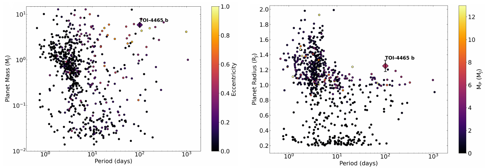
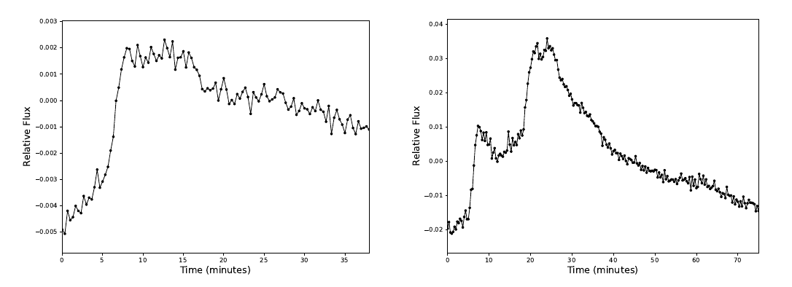
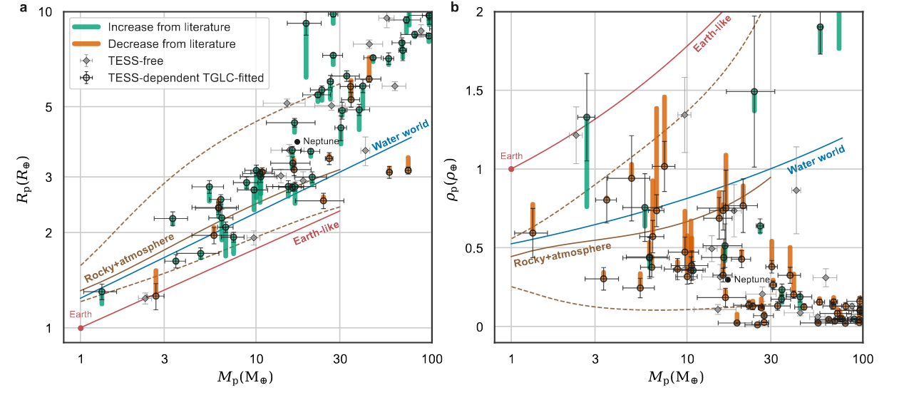

Welcome TESS followers to our latest news bulletin!
Last week, we witnessed the amazing first images from the Rubin Observatory! We are looking forward to the science that will be enabled by the overlap between Rubin and TESS Cycle 8 observations of the southern hemisphere. Go Rubin and TESS!
This week, we are looking at three recent papers from the archive . Enjoy!
First, we highlight the discovery and confirmation of TOI-4465 b, a massive gas giant that orbits its star every 102 days, that advances our understanding of the temperate regions of planetary systems. TOI-4465 b helps fill the observational gap in long-period planet populations, provides insights into planet formation mechanisms beyond the snow line, and represents a potential target for atmospheric characterization studies of cool gas giants. The study also highlights the collaboration potential between professional and amateur astronomers for exoplanet discovery and characterization.
Next, we outline a paper examining quasi-periodic pulsations in stellar flares. These pulsations represent an intriguing and poorly understood phenomena in stellar astrophysics, and provide crucial insights into the magnetic field structure and energy release mechanisms. The study of quasi-periodic pulsations is important for advancing our knowledge of stellar activity and coronal heating processes, with implications for understanding space weather effects on potentially habitable exoplanets.
The third paper investigates the radii of hundreds of transiting exoplanets observed by TESS. The size of an exoplanet is fundamental to understanding planetary composition, formation, and habitability potential. Precise radius measurements, typically derived from transit observations, are crucial for characterizing the exoplanet population and informing theoretical models. The paper examines systematic biases in these measurements that, if not properly accounted for, can significantly distort our understanding of planetary demographics and evolution.
Giant Outer Transiting Exoplanet Mass (GOT ‘EM) Survey. VI: Confirmation of a Long-Period Giant Planet Discovered with a Single TESS Transit (Essack et al. 2025) :
Essack et al. (2025) present the discovery and confirmation of TOI-4465 b – a gas giant with a mass of ~5.9 MJupiter and radius of ~1.3 RJupiter, orbiting a G dwarf star located approximately 122 pc away. The planet was initially detected in TESS Sector 40 data as a single-transit event, with subsequent radial velocity observations revealing an orbital period of approximately 102 days and an orbital eccentricity of about 0.24. The authors coordinated a global ground-based photometry campaign from multiple sites worldwide, including observations from 24 citizen scientists. The observations successfully captured the predicted 12-hour transit event and confirmed the 102-day orbital period. Combining all available data, the authors estimated that the planet has a relatively high density of 3.7 g cm−3 and, due to the eccentric orbit, an equilibrium temperature ranging between 375 and 478 K. Essack et al. (2025) note that based on giant planet structure models, TOI-4465 b appears to be enriched in heavy elements at levels consistent with late-stage accretion of icy planetesimals. Specifically, the authors determined a bulk metallicity of 0.09, corresponding to a heavy-element mass of 171 MEarth and representing an enrichment factor of 7.5 relative to the host star. Essack et al. (2025) argue that TOI-4465 b occupies an important region in exoplanet parameter space populated by giant planets that are simultaneously large, massive, dense, and temperate. In particular, TOI-4465 b is the largest gas giant with a period exceeding 100 days, and the second most massive planet with radius greater than 1.2 RJupiter and a period longer than 10 days.. In addition, the authors calculated transmission and emission spectroscopy metrics, finding TSM values ranging from 9.5 to 12.2 and ESM values from 2.9 to 9.0, making TOI-4465 b a promising target for emission spectroscopy. Essack et al. (2025) also argue that disequilibrium chemistry effects including shifts in CO/CH4 and N2/NH3 ratios, nitrogen chemistry transitions, and sulfur haze formation could potentially be detectable through comprehensive spectroscopic observations. Thanks to TESS, Essack et al. (2025) were able to discover and characterize the largest gas giant with an orbital period longer than 100 days, and orbiting a sub-solar metallicity host star. TOI-4465 highlights the excellent synergy between single-transit planet candidates detected in TESS and follow-up RV and photometric campaigns.
Stationary quasi-periodic pulsations in 20-second cadence TESS flares (Joshi et al. 2025) :
Joshi et al. (2025) present a comprehensive study of more than 66,000 targets observed by TESS using 20-second cadence data from sectors 27 through 80. The authors developed an automated flare detection system based on autoregressive integrated moving average models, successfully identifying 3,878 flares across 1,285 stars. Joshi et al. (2025) report that more than 61% of the detected flares had durations shorter than 10 minutes, demonstrating the advantage of high-cadence TESS observations for capturing such short-durations stellar events. Using the Automated Flare Inference of Oscillations method, the authors discovered 61 quasi-periodic pulsations (QPP) events in 57 individual stars, with periods ranging from 42 to 193 seconds. Joshi et al. (2025) argue that this represents the largest catalog of short-period stellar QPPs compiled from TESS observations to date, and note that the detected periods are significantly shorter than those found in previous studies, which typically identified QPPs lasting several minutes to hours. Their analysis revealed that approximately 1.6% of all flare events exhibited QPP signatures, a rate lower than some previous surveys but consistent with the conservative nature of the detection method employed. Five stars showed two distinct QPP detections, including both M-dwarf and K-type stars, as well as one B-type subdwarf that displayed particularly consistent pulsation periods of approximately 60 seconds across separate flare events. Overall, the author’s statistical analysis showed no significant correlations between QPP periods and fundamental stellar parameters such as effective temperature, rotation period, or flare energy. However, they identified an intriguing scaling relationship for a subset of their data, where larger flares tend to host QPPs with longer periods, such that the relationship follows a power-law with an exponent of 0.33, similar to scaling laws observed in solar flare QPPs. Additionally, the authors detected flares with complex substructures and multi-peak morphologies that would be difficult to resolve in lower-cadence observations. Utilizing data from TESS, Joshi et al. (2025) find support for the hypothesis that stellar and solar flare processes may be governed by similar physical mechanisms, providing valuable constraints for theoretical models of magnetic energy release in stellar atmospheres.
Hundreds of TESS exoplanets might be larger than we thought (Han et al. 2025) :
Han et al. (2025) present a comprehensive analysis on the radii of transiting exoplanets observed by TESS. The authors analyzed the lightcurves of 346 confirmed exoplanets in single-planet systems with non-grazing transits, utilizing the Sector 1-55 High Level Science Product TESS-Gaia Light Curves (TGLC), which provide improved deblending techniques to separate the target’s light from nearby contaminating sources. The team categorized planets into two groups based on their measurement methodology: "TESS-free" planets whose radii were determined primarily from ground-based photometry, and "TESS-dependent" planets whose measurements relied on TESS photometry. The study examined the impact on mass-radius relationships, finding that corrected TGLC measurements produce relations more consistent with established literature models. For TESS-free planets, the authors found that the median fractional difference is negligible, at -1.3% +/- 1.4 %, indicating good agreement with TGLC measurements. However, TESS-dependent planets showed a much larger fractional difference of 6.1 +/- 0.3%, suggesting systematic contamination issues in TESS-based measurements corresponding to approximately 20 percent overestimation in planetary densities. To validate their methodology, the authors tested TGLC against Kepler planet measurements, finding excellent agreement with a median difference of ~1.5.%. Han et al. (2025) argue that this increases the confidence in the TGLC approach and confirms that the discrepancies arise specifically from TESS photometry contamination rather than issues stemming from the method used. Additionally, the authors used probabilistic modeling to assess whether water worlds represent a distinct population between rocky planets and sub-Neptunes, finding that corrected radii provide somewhat stronger statistical evidence for the existence of water worlds at the expense of rocky planets.. Capitalizing on TESS data, the results of Han et al. (2025) emphasize the need for advanced deblending techniques in future exoplanet studies and suggest that many current demographic conclusions about the TESS exoplanet population may require revision based on these measurements.

Fig. 1: Taken from Essack et al. (2025). Left panel: Orbital period as a function of planet mass and orbital eccentricity for confirmed giant planets with mass and radius uncertainties smaller than 20%. Right panel: same as left panel but for orbital period vs mass and radius.

Fig. 2: Taken from Joshi et al. (2025). Example flares detected in 20-sec TESS data. Left panel: a flare with a flat-top morphology; Right panel: flare with a complex multi-peak morphology.

Fig. 3: Taken from Han et al. (2025). Left panel: Mass vs revised radius for small TESS planets. Grey diamonds represent “TESS-free” planets, where the radius was determined primarily from ground-based observations. Open circles represent “TESS-dependent” planets, where the radius was obtained from TGLC fits.